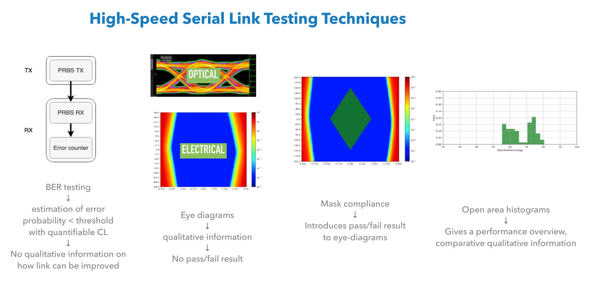

The upgraded muon interface of ATLAS (MUCTPI) is a single board with 334 high-speed serial links: 208 optical inputs from the muon sector logic, optical outputs to other trigger processors, and links between its own FPGAs. Each one has to be shown to work before the board goes anywhere near the experiment, and there were three prototype versions. Doing that by hand in the vendor's graphical tool does not scale. IBERTpy is the Python package I wrote to do it from a script.
What "works" means for a link
The figure of merit is the bit error rate (BER). For the sector logic inputs we decided that one bit error per link per day was acceptable: at worst one false trigger or one lost event in a day. At 6.4 Gb/s that corresponds to a BER of 1.8 × 10−15.
An error rate cannot be measured exactly, because that would take an infinite number of bits. What can be stated is that it lies below a limit with a certain confidence. For a test in which no error is seen, the confidence level is 1 − e−γn, where γ is the limit and n the number of bits received. Turned around: to claim fewer than one error per day with 95% confidence, a link has to run for about three days without an error.
A BER test gives a clear pass or fail and no information about why. For that one looks at an eye diagram. Xilinx transceivers can measure a statistical eye by themselves, with a second sampler in the receiver whose time and voltage offsets are programmable. It counts how often that sampler disagrees with the main one. The scan does not disturb the data and needs no external instrument.
The scan has its own limit. Each point is measured down to a target BER, which I set to 10−7. A full eye of 32,895 points then takes about a minute. The same scan with a target of 10−15 would take about 190 years. So the eye diagram shows the shape of the opening and how links compare, and the long BER run gives the number.
To avoid judging eyes by looking at them, I used a mask: a region in the middle of the eye where errors must not appear. The mask comes from the manufacturer of the optical modules (Broadcom MiniPOD) and is applied with the hit-ratio method, which tolerates a BER of up to 5 × 10−5 inside the mask. A link passes or fails.
Each of these techniques answers a different question, and none answers all of them. A BER test gives an error probability below a threshold with a known confidence, but says nothing about how to improve a link. An eye diagram shows the shape of the signal but gives no verdict. A mask adds the verdict to the eye. A histogram of the open area over many links gives the overview and makes boards comparable. IBERTpy produces all four.

The manual way
The test firmware is built on the Xilinx IBERT core, which contains a pattern generator and checker, the error and bit counters, and access to the transceiver settings over JTAG. In Vivado one then has to tell the tool which transmitter is connected to which receiver, set the polarity of each end, configure the pattern, start the scans and save the results. On this board channels are swapped and polarities inverted in many places, because that was allowed in order to simplify the layout. Entering 334 links by hand, for each prototype and at each bit rate, is slow, and a mistake is easy to make and hard to notice.
What IBERTpy does
The package takes the connectivity and the polarities from PCBpy, which extracts them from the netlist of the board. From there:
It generates the TCL scripts that create the links in Vivado, set the polarity of each one, run the BER tests and run the eye scans. Vivado executes them and writes the BER results and the eye data to CSV files. IBERTpy reads the CSV files, plots each eye diagram, applies the mask, and builds histograms of the horizontal opening, the vertical opening and the open area. Finally it compiles everything into a PDF report.
Vivado does not need a cable to the board. It connects over Ethernet to a hardware server running on the system-on-chip of the MUCTPI, which drives the JTAG chain of the FPGAs. Once the loopback fibres are in place, a test campaign runs remotely, which is the "without touching them" in the title.

The report is built for a reader with several hundred eye diagrams to get through. The table of contents links to a summary page per optical module, where the twelve channels of one MiniPOD are shown together and a channel that differs from its neighbours stands out. Each small eye links to a detail page with the transceiver type, time stamps, openings, scan settings and software version.
What came out
Two long runs were made at 12.8 Gb/s, twice the rate needed for Run 3, as a stress test. On the second prototype, 112 transceivers ran together for ten days. On the third, 264 transceivers were tested, including all 208 sector logic inputs. Two boards together do not have enough optical transmitters to drive all inputs of one board at once, so this run was split into two parts of three days each. No errors were seen in either run. For the 208 inputs that gives a BER below 9 × 10−16 at 95% confidence, which is fewer than one error per day per link at 12.8 Gb/s.
The histograms turned out to be the most useful part for comparing boards. On the first prototype the open area at 6.4 Gb/s ranged from 55% to 80%, and the histogram had two separate groups. They corresponded to the two transceiver types in that FPGA, GTH and GTY. In the histogram the difference was visible at a glance. The second prototype used one transceiver type and showed one group, from 66% to 78%. The third, with one equalisation setting of the optical transmitters changed, went from 70% to 78%, with an average of 75%.

At 12.8 Gb/s the eyes are smaller, 39% to 63% on the third prototype. Every link on every prototype still passed the mask at both rates. The worst one at 12.8 Gb/s passed with little margin: there were errors in one corner of the mask, below the permitted hit ratio.
Beyond the loopback
Loopback tests show that the board can talk to itself. The real links go to other boards, so the same tools were used in integration tests with the systems on either side. With sector logic modules at 6.4 Gb/s there were no bit errors over an overnight run and the open area was between 58% and 74%. Towards the topological processor, L1Topo, at 11.2 Gb/s there were no errors after a 40-hour run and the open area was between 50% and 64%.
These tests also measured how much margin the optical budget has. Attenuating the light step by step and repeating the eye scan shows when the eye starts to close. Both links still had good eyes with about 7 dB of extra attenuation.

The full report for the second and third prototypes is on this site as the serial link test report (PDF).
Reuse
IBERTpy is on GitHub and PyPI. At CERN it has also been used to produce the eye diagrams of the Barrel Calorimeter Processor, a board of the CMS experiment.
The operational firmware of the MUCTPI has a serial link monitoring unit built on the same eye-scan feature. It can measure the eye of all 104 inputs of an FPGA while real data is being received, without interrupting it. Those eyes are wider than the ones in the test report, because 8b10b data has shorter runs of identical bits than the PRBS-31 pattern used for the tests, and therefore less data-dependent jitter.
In short
With hundreds of links the measurement itself is the small part. The work is in the mapping, the bookkeeping and the reporting, and a script does all three the same way every time. A pass or fail criterion, the mask, removes the opinion from "this eye looks fine". And a histogram of all links shows things that no single eye diagram does.